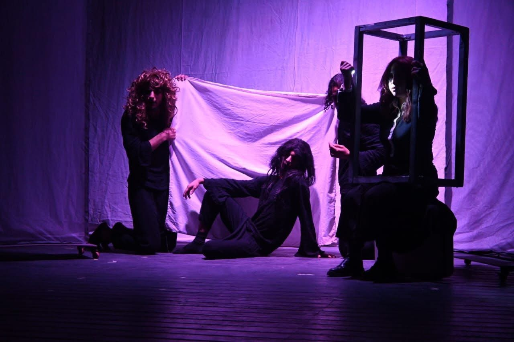

03TNO / SPECTACLE
PHILOPHOBIA
فيلوفوبيا

Production du Théâtre Nouveau Oran et mise en scène par Yahiya Zine Eddine Ben Hamou, cette pièce traite de la peur de l’engagement et des relations affectives. Durée : 60 minutes en continu. Elle suit un jeune homme marqué par des déceptions passées qui rencontre une jeune femme souffrant de philophobie, ou peur de l’amour. Tous deux craignent l’amour tout en le désirant ; le conflit se traduit par des scènes expressives et une chorégraphie de mouvement. L’œuvre aborde les raisons psychologiques de la peur des nouvelles relations, l’influence négative des réseaux sociaux sur la vision de l’amour et les effets du divorce et des séparations familiales sur les nouvelles générations.
← RETOUR AUX CRÉATIONS